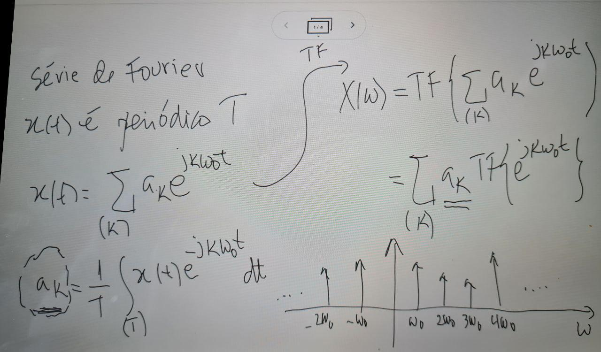

Transformada de Fourier de Funções especiais#
Direto da Definição#
Linearidade#
\(TF\{a_1x_1(t)+a_2x_2(t)\}=a_1X_1(j\omega)+a_2X_2(j\omega)\)#
Atraso temporal#
\(TF\{x(t-t_0)\} = X(j\omega)e^{-j\omega t_0}\)#
Justificativa#
Linearidade#
\(\int_{-\infty}^{\infty}x(t)e^{-j\omega t}dt = \int_{-\infty}^{\infty}(a_1x_1(t)+a_2x_2(t))e^{-j\omega t}dt= a_1\int_{-\infty}^{\infty}x_1(t)e^{-j\omega t}dt + a_2\int_{-\infty}^{\infty}x_2(t)e^{-j\omega t}dt= a_1X_1(j\omega)+a_2X_2(j\omega)\)
Atraso#
\(\int_{-\infty}^{\infty}x(t-t_0)e^{-j\omega t}dt\),
fazendo \(t'= t-t_0\) tem-se, \(t=t'+t_0\) e \(dt'=dt\)
tem-se: \(\int_{-\infty}^{\infty}x(t')e^{-j\omega (t'+t_0)}dt' = e^{-j\omega t_0}X(j\omega)\)
Escala#
\( TF\{x(at)\}=\frac{1}{|a|}X(\frac{j\omega}{a})\)#
Reversão temporal#
\(TF\{x(-t)\} = X(-j\omega)\)#
Justificativa: troca de variável#
Propriedade: Derivada#
Se \(x(t)\to 0\) quando \(t\to \pm \infty\):#
\(TF\{x^{'}(t)\}= j\omega X(j\omega) \)#
Justificativa:
\( TF\{x^{'}(t)\}=\int_{-\infty}^{\infty}x^{'}(t)e^{-j\omega t}dt \)
Aplicando a integral por partes
\(TF\{x^{'}(t)\}=x(t)e^{-j\omega t}|_{-\infty}^{\infty} + j\omega \int_{-\infty}^{\infty}x(t)e^{-j\omega t} dt \)
\(TF\{x^{'}(t)\}= j\omega X(j\omega)\)
De forma recorrente: \(TF\{x^{(n)}(t)\} = (j\omega)^nX(j\omega)\)
Propriedade: Integral#
Se \(\omega \neq 0\):
\(TF\{\int_{-\infty}^{t}x(\tau)d\tau\}=\frac{1}{j\omega}X(j\omega) \)
Justificativa:
\( \phi(t) = \int_{-\infty}^{t}x(\tau)d\tau \ \ :. \ \ \phi^{'}(t)=x(t) \)
\(TF\{\phi^{'}(t)\} = TF\{x(t)\} = j\omega \Phi(j\omega)\)
\(\Phi(j\omega)=\frac{1}{j\omega}X(j\omega)\)
Propriedade: Multiplicação pela variável livre#
\(TF\{-jtx(t)\}=\frac{d}{d\omega}X(j\omega)\)
Justificativa:
\( X(j\omega)=\int_{-\infty}^{\infty}x(t)e^{-j\omega t}dt\)
\(\frac{d}{d\omega}X(j\omega)=\frac{d}{d\omega}\int_{-\infty}^{\infty}x(t)e^{-j\omega t}dt \)
\(\frac{d}{d\omega}X(j\omega)=\int_{-\infty}^{\infty}x(t)\frac{d}{d\omega}\{e^{-j\omega t}\}dt \)
\(\frac{d}{d\omega}X(j\omega)=\int_{-\infty}^{\infty}(-jtx(t))e^{-j\omega t}dt \)
\( \frac{d}{d\omega}X(j\omega)= TF\{-jtx(t)\} \)
Propriedade: Convolução#
\( TF\{x_1(t)\}=X_1(j\omega)\)
\( TF\{x_2(t)\}=X_2(j\omega)\)
\( TF\{x_1(t)*x_2(t)\}=X_1(j\omega).X_2(j\omega)\)
Justificativa:
Mudando a ordem das integrais:
Usando a propriedade do deslocamento temporal:
\( \int_{-\infty}^{\infty}x_2(t-\tau)e^{-j\omega t}dt = X_2(\omega)e^{-j\omega \tau} \)
\( \begin{align} TF\{x_1(t)*x_2(t)\} & = \int_{-\infty}^{\infty}x_1(\tau)X_2(\omega)e^{-j\omega \tau} d\tau\\ & = X_2(\omega)\int_{-\infty}^{\infty}x_1(\tau)e^{-j\omega \tau}d\tau \\ & = X_2(\omega).X_1(\omega) = X_1(\omega).X_2(\omega) \end{align}\)
Propriedade: Convolução#
De forma equivalente mostra-se que
Casos Especiais - Função Impulso#
Justificativa:
i. aplicação da definição
ii. uso das propriedades
Casos Especiais - Função Impulso#
Mostre que:
Justificativa
Casos Especiais - Função Impulso#
Mostre que $\(\delta(t)=\frac{1}{\pi}\int_{0}^{\infty}\cos(\omega t)d\omega\)$
Justificativa:
\(sen(\omega t)\) é ímpar. Logo:
De forma geral,#
Casos Especais: TF da constante#
Determine a \( TF\{1\}\), \(x(t)=1\)
Justificativa
Propriedade: Teor. Modulação#
Seja \(X(j\omega)=TF\{x(t)\}\), determine \(TF\{x(t)e^{j\omega_0t}\}\)
Justificativa:
Propriedade: Teor. Modulação#
Determine \(TF\{x(t)cos\omega_0 t\}\)
Justificativa:
usando a relação de Euler
TF da exponencial complexa#
Determine \(TF\left\{e^{j\omega_0t}\right\}\)
Justificativa:
TF das funções seno e cosseno#
Determine a TF para \(cos(\omega_0t)\) e \(sen(\omega_0t)\)
Justificativa:
De forma análoga:
Interpretação da Série de Fourier#
